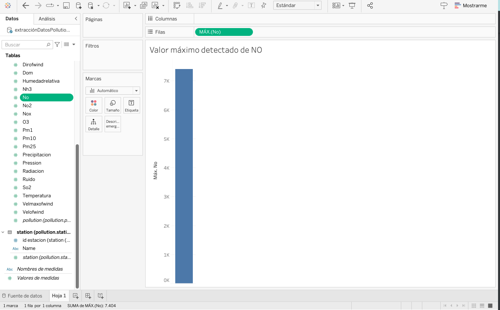

NO (Óxido de Nitrógeno) es un gas tóxico formado principalmente por la combustión de combustibles fósiles en vehículos y plantas industriales. Este compuesto puede tener efectos adversos en la salud humana, especialmente en el sistema respiratorio, y también juega un papel importante en la formación de smog y lluvia ácida. El NO es un precursor en la formación de otros contaminantes como el dióxido de nitrógeno (NO2), lo cual contribuye a la contaminación del aire.
Valor máximo detectado de NO
Cantidad de NO por año
Cantidad de NO por año y estacion
Juntamos los 3 graficos en el dashboard, y arriba a la derecha, mostramos la possibilidad de filtrar los graficos por año